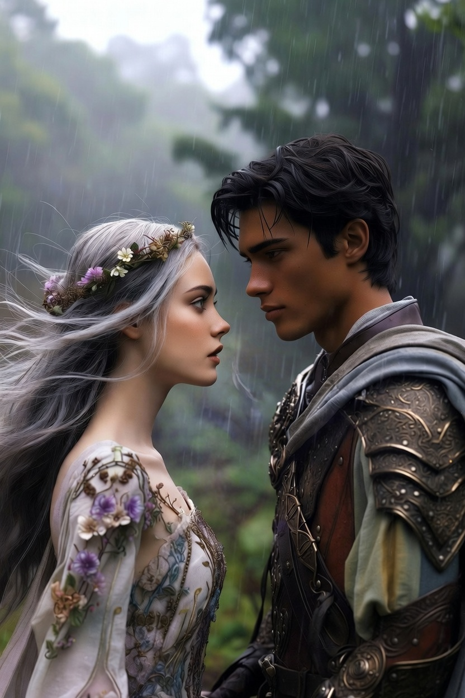

Ajánlom egy kedves barátomnak, aki keresi a pillanatban rejlő örökkévalóságot, és mer hinni a szív órájának szavában.
Ahogy elhagyták a Nyugalom Várának romjait, a sivatagi szél még száraz volt, de a következő pillanatban minden megváltozott. A dűnék vöröse hirtelen egy mély, zengő g-moll akkorddá változott a talpuk alatt. A rezgés végigfutott Alerion csizmáján, fel a gerincéig. Alerion megtorpant; nem látta a színeket, hanem a fülében érezte őket. A horizont lüktetett, minden egyes homokszem egy apró, magas frekvenciájú ciripelésként adódott hozzá a sivatag mély morajlásához.
Amikor Honóra megszólalt, a szavai nem hangokként, hanem apró, lila és arany színű párafelhőkként hagyták el az ajkát, amiknek friss eső illata volt. Alerion ösztönösen beleszagolt a levegőbe, hogy értse a lányt.
– Alerion, ne nézz a szemeddel! – kiáltotta a tündér, de a kiáltása egy hideg, kék fuvallatként simult a lovag arcára. A szavak fagyos érintése libabőrt csalt a bőrére. – Itt az érzékek felcserélődtek. Ha a megszokott módon próbálod értelmezni a világot, megőrülsz.
Beléptek a Zavaros Érzékek Mezejére. A levegő sűrűvé vált, mint a szirup. Itt a logika nem a számokban vagy az irányokban rejlett, hanem az érzelmi rezonanciában. A szélnek narancssárga íze volt, savanykás és vibráló, a távoli hegyek vonulata pedig úgy vibrált a levegőben, mint egy végtelenített hárfajáték. Alerion érezte, ahogy az elméje kétségbeesetten próbál kapaszkodni a régi mintákba, de a látása süket volt, a hallása pedig vak.
A legnagyobb nehézséget azonban a kommunikáció jelentette. Minden gesztus más jelentést hordozott, mint amit a biológia diktált volna. Alerion megpróbálta megfogni Honóra kezét, de az érintés nem melegséget adott, hanem egy éles, ezüstös csengést váltott ki a levegőben. Olyan volt, mintha egy kristálypoharat ütöttek volna meg a sötétben.
– Nem tudlak érezni! – mondta Alerion feszülten. Az ő szavai súlyos, barna rögökként hullottak a földre, amelyeknek földszaga volt. Minden mondata után érezte a súlyt a torkában, mintha köveket köpne. – A hangod látom, az érintésed hallom... elveszítem a kapaszkodókat!
Honóra arca eltorzult a koncentrációtól. Ő tündérként közelebb állt az elemi erőkhöz, de ez a káosz őt is megviselte. – Használd az észrevétlen logikát! – válaszolt Honóra, miközben egy sárga dallamot rajzolt a levegőbe a kezével, ami egy édes barack illatát árasztotta. – Ha a látvány hang, akkor keresd az összhangzatot! Ha az illat irány, akkor kövesd a legtisztább aromát! Ne a szemednek higgy, hanem a rendszernek, ami a káosz mögött lüktet!
A labirintus közepén egy hatalmas, láthatatlan akadályba ütköztek, ami csak akkor vált érzékelhetővé, ha nem mozdultak. Ez volt a Csend-Fény, egy fal, ami vakítóan üvöltött és fülsiketítően villódzott. Amikor megálltak előtte, a csend olyan fényesen csapott le rájuk, hogy Alerion eltakarta a szemét, de a fény a fülén keresztül hatolt be, mint egy éles sikoly.
A fal előtt állva a pánik kezdett eluralkodni a lovagon. A világ egy értelmezhetetlen zajhalmazzá vált. – Ahhoz, hogy átjussunk – magyarázta Honóra, miközben a szavai lágy, smaragdzöld indákként tekeredtek Alerion karjára, megnyugtató, növényi illatot árasztva –, össze kell hangolnunk az érzékeinket. Én leszek a hallásod, te pedig az én látásom. De ne feledd: itt a bizalom az egyetlen érvényes koordináta.
Alerion lehunyta a szemét. Kirekesztette a külvilágot, ami bántotta az érzékeit. Próbálta elnyomni az agyában dübörgő vizuális zajt. Csak a belső képére koncentrált, amit Honóra jelenléte jelentett. Meg kellett találnia a hidat az ő sötétsége és a lány vibrálása között. – Honóra, mondj valamit, ami... ami meleg!
A tündér nem szavakat keresett, hanem egy emléket a Szivárvány-tóról. Felidézte a harmincadik nap delelő napfényét. Azt a pillanatot, amikor a víz tükre arannyá válik. Ez a gondolat a mezőn egy vakítóan fényes, vörösbor ízű szalaggá változott, ami átvágott a Csend-Fény falán. A "zaj" hirtelen édessé vált.
Alerion nem látta az utat, de érezte az ízét. Követte a vörösbor zamatát a levegőben, és lépésről lépésre vezette Honórát. Az elméje végre elengedte a régi világot. Ez volt a legtisztább logika: ha a bemeneti jelek megváltoznak, a rendszernek új algoritmust kell alkotnia az életben maradáshoz. Az ész nem ragaszkodott a régi sémákhoz, hanem alkalmazkodott az új őrülethez. Minden lépés egy korty volt a láthatatlan borból, minden mozdulat egy újabb bit az ismeretlen kódrendszerben.
Ahogy a mező szélére értek, az érzékek lassan kezdtek visszarendeződni. A világ visszatért a medrébe, mint egy folyó az áradás után. A színek visszakerültek a tárgyakra, a hangok a fülbe, az illatok az orrba. A hirtelen némaság és szürkeség szinte fájt a korábbi extázis után. De valami megváltozott. A kapcsolat köztük nem szakadt meg.
– Érzed? – kérdezte Alerion, miközben a keze most már tényleg melegnek érződött Honóra kezében. Nem volt többé csengés, csak a hús és a vér valósága.
– Igen – felelte a tündér. A szemei még mindig tágak voltak a csodálkozástól. – Most már nem csak látlak és hallak. Hanem minden porcikámmal ismerlek. Átmentünk az érzékek káoszán, és a végén... tisztábban látjuk egymást, mint bármikor.
